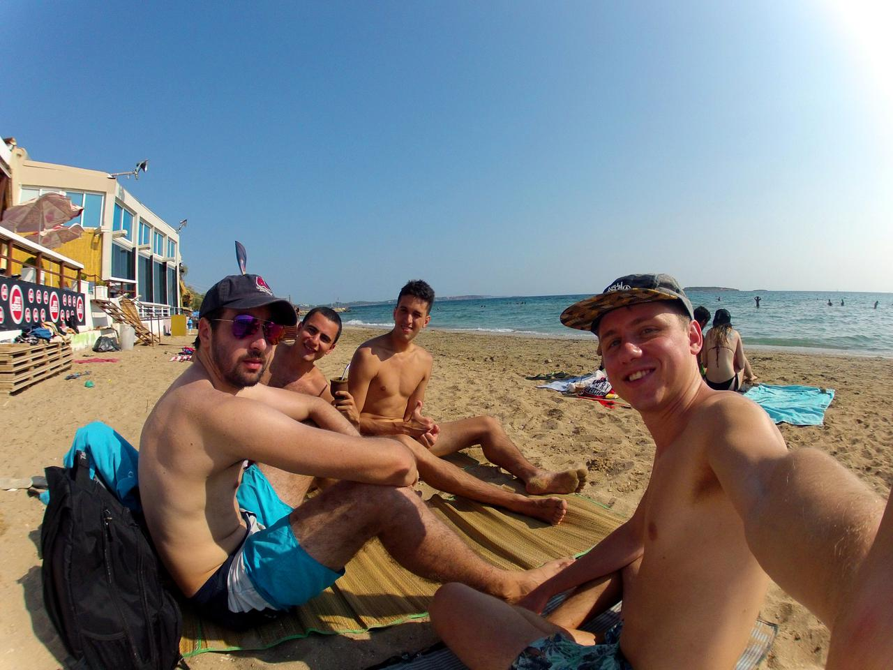

Eurotrip 2016
Hi guys, from may to november 2016, I've been traveling around Europe with some friends. I wanted to share some insight about our trip.
First, I would like to start with some numbers:
720 litres of beer were drunk (around 2 lt per day per person during 3 months on average)
41 cities, 13 countries visited.
12 airplanes, 10 buses, 6 trains, 2 ferries.
5 different seas, 1 ocean
Countles hours of sun
Cheapest country: Hungary
Most expensive: London
Best activity: Surf (Don't miss it if you have the opportunity)
Friends
We met a lot of people, never had a problem with anyone, all of them were wonderful, except maybe a racist drunk swedish in Denmark, that was weird, but he didn't do anything to us, just complaining about random stuff.
If I had to make a recommendation, I'd say go to hostels in Spain and Portugal, because there you'll find the most relaxed environment and people willing to join you in an adventure. And please give an opportunity to couchsurfing, we didn't use it much, till the end, and we had a great experience, really warm people.
Money
If you are wondering how much we spent, we used an easy rule. We calculated an average of USD 50 per day. Yes, that includes transportation (planes, buses, trains, etc), food and shelter.
How does this work? Well it's easy. First of all, housing is usually around USD 20, probably you'll find some places around USD 10 and sometimes USD 40, but, and let me focus on this word, the AVERAGE was USD 20.
Second, food. Let's be generous, and set USD 10 for food, which is a lot if you cook your own meals.
So, let's use 15 USD for transportation, but we are not going to be moving everyday, so you can sum it. Doing some math, we were abroad for 90 days, with 15 USD for transportation every day, it's USD 1350 available to move, without taking into account the continental flights, it's around USD 52 per transport.
What do we do with the USD 5 left? Well it's USD 450 to spend in museums and going out, use it wisely.
Exploring cities
Okay, we didn't had much money to pay expensive tours, so we usually went to the free tours. They are in every city, and you pay what you want, after the tour, and if you don't like it, just leave.
They usually spam their other payed tours, but the important thing is that you get to know some worthy places to visit, like the Hofbräuhaus München. And you learn some history of the place.
Another important source of information are the USE-IT maps. which are made by locals (or that's what they say). They explain some traditions of the city, where to go, and where not to go. You can download them or check where to get them, and the best part is that... it's FREE.
Transportation sources
Blablacar. It's for car pooling, someone is going somewhere, and, having some free seats, they are offered in this platform.
Goeuro. Includes many transportation systems, train, bus, plane, car pooling. We used mostly for buses.
Google Flights. It's the best search engine for flights, allowing to track specific flights or dates.
Acommodation sources
AirBnb. Renting appartments
HostelWorld. Renting beds in hostels
Couchsurfing. Going for free to someone's place. We did it once in Milan and we had a great experience.
Bottom line
I encourage you to don't miss the opportunity to travel and meet new friends, you won't regret at all.
Happy new year!
Santi